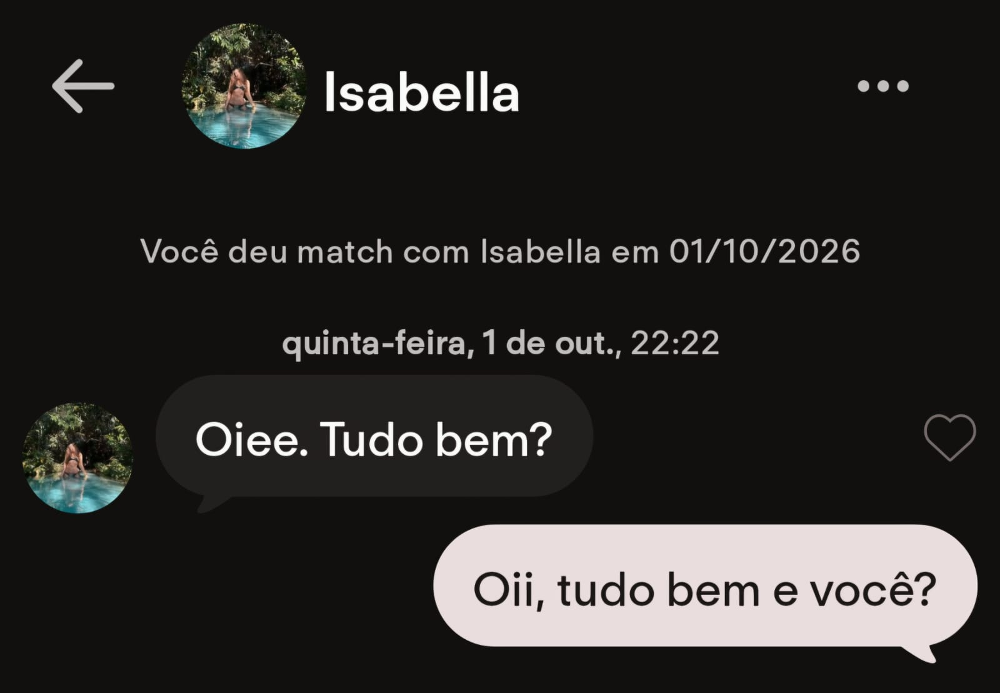

01
O acaso
Dizem que o universo é cheio de acasos.
Um planeta ser formado é fruto de um acaso. Esse planeta se desenvolver ao ponto de possibilitar que formas de vida apareçam é fruto de um acaso ainda maior — uma singularidade.
Uma história entre o acaso e o destino
Algumas vidas seguem caminhos separados.
Até encontrarem a mesma estrela.
O acaso
Um planeta ser formado é fruto de um acaso. Esse planeta se desenvolver ao ponto de possibilitar que formas de vida apareçam é fruto de um acaso ainda maior — uma singularidade.
A consciência
Nesse planeta existem seres vivos que têm consciência. Essa consciência permite que façamos escolhas e decidamos, com liberdade, como e com quem queremos passar as nossas vidas.
Os caminhos
Em 3 de março de 1997 nasceu um menino chamado João. Em 16 de novembro de 1997 nasceu uma menina chamada Isabella.
Por 29 anos, eles viveram sem o absoluto conhecimento um do outro. Mas parece que suas vidas estavam sendo preparadas para o momento em que fossem se conhecer.

O encontro
Desde aquele dia, duas vidas que antes eram vividas separadamente passaram a caminhar juntas. Os planos que antes eram pensados para um agora são pensados para dois.

A decisão
Minha decisão já havia sido tomada antes sequer do primeiro beijo. Me encantei pelas primeiras palavras, pelas primeiras atitudes, pelos primeiros sorrisos e olhares.
Todas as primeiras coisas que fiz e faço com você são únicas, especiais e diferentes.
Meu coração pediu para dizer
Você ainda tem uma primeira coisa que eu gostaria que fizéssemos juntos.